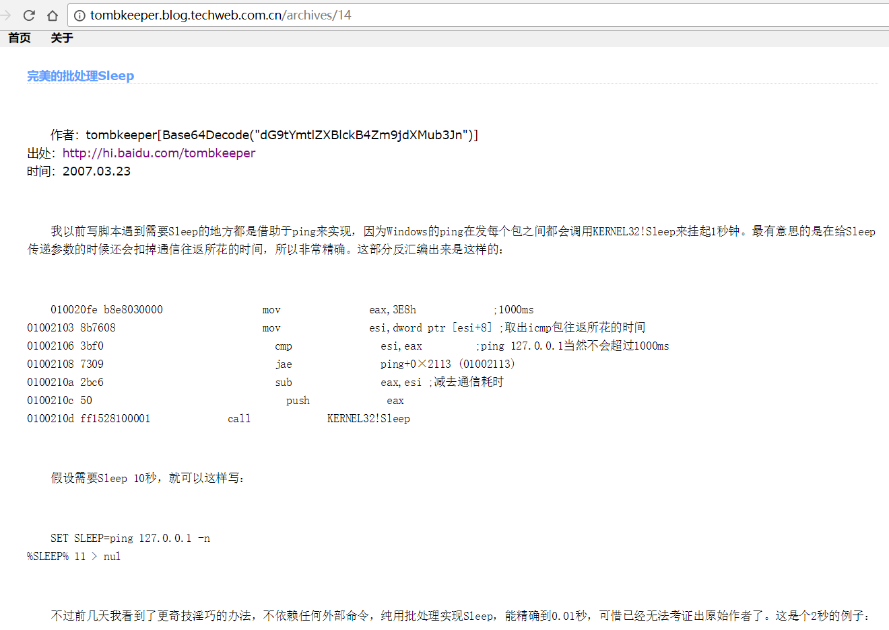
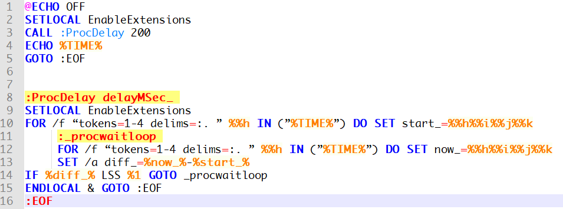

校园网使用PPPoE拨号上网，每次都通过图形化界面通断网络不太方便，希望能一键上网一键下线，于是写了个小脚本。
配置好相关参数后保存为 C:\Windows\System32\surf.bat ，重启命令行即可使用 surf 命令通断网络，常用的话甚至只要 win+r->enter就可以自由迅速地上线下线啦。把下面第二十行的注释去掉可以在联网同时打开ss，有些缺憾的是还没有实现断网时退出ss。
流程控制参考了Batch Guide by Terry Newton 。
1 | REM 校园网使用PPPoE拨号上网，将文件内容存为 C:\Windows\System32\surf.bat ，可以命令行拨号上网 |
2017/10/05 更新代码
添加第十九行，如果ss已经在运行，只要传入一个参数就不会尝试开启啦。
2018-03-12重写
逻辑更清晰，添加重连功能，有时被ban可以起到刷新IP的作用。
- surf r 断开并重新连接
- surf 通<=>断
- surf any 连接但不启动shadow socks
1 | @echo off |
2018/4/12 22:44 update
由于断开与重新拨号间需要有个时延，所以以上代码使用第26行实现，这也是大部分batch脚本实现时延的方法。
ping 127.1 n_seconds > nul 可以实现整秒延时，而TK教主在 完美的批处理Sleep 中提到一种在批处理脚本中理论上能精确到0.01秒的延时操作。
1 | @ECHO OFF |
原文如下：

